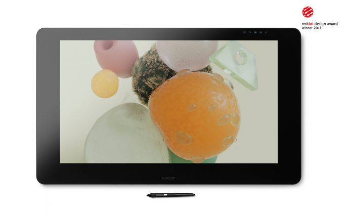

Vendido por: Huion
200

1/5
2
2000 €
? 3La mayor pantalla hasta la fecha. Wacom Cintiq Pro 32 presenta una excelente pantalla de 4K, un rendimiento del color de primera calidad y una ausencia casi total de paralaje. Combinado con el Wacom Pro Pen 2, brinda una experiencia diseñada para potenciar cualquier avance creativo.